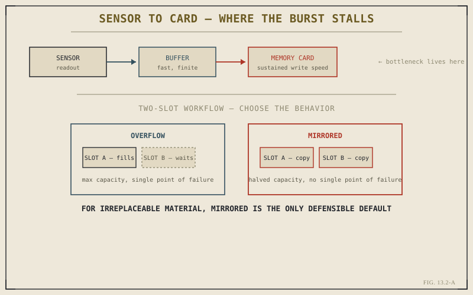

Chapter 13.1 argued that a kit should be built around real, recurring work rather than catalog completeness. Nothing in that kit fails as quietly, or as expensively, as a memory card chosen wrong — either too slow for the buffer it's feeding, or simply full at the worst possible moment. This chapter treats the card not as an accessory but as the last link in the camera's own imaging pipeline, because that's what it actually is.
The Card Is Part of the Camera's Speed, Not Separate From It
Chapter 9.5 described buffer depth and burst rate as properties of the camera body, but that description was only half true. A sensor captures a frame, the processor writes it to the buffer, and the buffer drains to the card — and that drain rate is capped by whichever of the two, buffer or card, is slower. A body with a deep, fast buffer paired with a slow card doesn't get to keep shooting once the buffer fills; it stalls at exactly the moment card write speed becomes the bottleneck instead of sensor readout. The card a photographer chooses is functionally part of the camera's continuous-shooting performance, not an accessory purchased after that performance is already fixed.
Matching Card Speed to the Work, Not the Marketing Number
Card marketing leads with peak read speed, which matters for offloading footage afterward but says little about sustained write speed during a burst — the number that actually governs whether Chapter 9.5's buffer drains fast enough to keep shooting. Sports and action work, per Chapter 10.5, lives or dies on sustained write speed during long bursts. A landscape photographer working per Chapter 10.2, shooting single frames on a tripod with seconds between shots, will never come close to testing a card's write speed and gains nothing from paying for headroom that specific work never uses. The same discipline from Chapter 13.1 — buy for the work you actually do — applies just as directly to cards as it does to lenses.

The card's sustained write speed, not its peak read speed, is what actually governs whether a burst stalls.
Redundancy During the Shoot, Not Just After It
Most cameras built for professional use offer two card slots, and the single most consequential storage decision a working photographer makes is what those two slots are configured to do. Overflow — writing to the second card only once the first fills — maximizes total capacity but leaves every frame on exactly one card until it's manually copied elsewhere. Mirrored writing — recording every frame to both cards simultaneously — halves usable capacity per pair but means a single card failure, corruption, or loss during the shoot itself destroys nothing, because an identical copy exists the instant the frame was captured. For any shoot where the material can't be recreated — the genres in Chapter 10.1 through 10.6 are almost all like this — mirrored writing is the only defensible default. Overflow is a convenience setting wearing a workflow decision's clothes.
Overflow protects against running out of space. It does nothing to protect against the one card you're actually relying on failing. Mirrored writing is the only one of the two that treats card failure as the real risk it is.
Formatting, Not Just Deleting
A card that's had files deleted from it and a card that's been formatted in-camera are not in the same state, even when both report the same free space. Deletion removes the file table's pointers to specific frames; formatting rebuilds the card's file system cleanly from scratch, and doing this in-camera rather than on a computer keeps that file system in the exact structure the camera itself expects. Cards that accumulate deletion-without-formatting cycles are measurably more prone to write errors over time — corruption that shows up as a handful of unreadable frames scattered through an otherwise good card, discovered only once you're back at a computer trying to open them. Formatting in-camera after each shoot, once the files are safely copied elsewhere, is cheap insurance against a failure mode that's entirely avoidable.
The Card's Job Ends Where the Backup's Begins
It's worth being precise about what a memory card is actually for: temporary, high-speed storage between the moment of capture and the moment of a real backup. Even a mirrored, correctly formatted pair of cards is not a backup strategy on its own — both cards travel in the same bag, through the same trip, exposed to the same loss or theft. Chapter 13.4 covers what a genuine backup actually requires, but the boundary matters here: a card's entire job is to survive from shutter press to the first real copy made somewhere else, reliably and at the speed the camera demands, and nothing past that point is the card's responsibility to guarantee.
Key Concepts to Remember
- A card's sustained write speed, not its peak read speed, determines whether a fast buffer actually keeps shooting during a burst.
- Match card speed to the genre you actually shoot — sustained bursts need headroom that single-frame work never uses.
- Mirrored dual-card writing protects irreplaceable material during the shoot; overflow only protects against running out of space.
- In-camera formatting after each shoot avoids the write errors that deletion-only cycles accumulate over time.
Cross-References Forward
| → Ch. 13.3 | Cleaning a Sensor Safely — the next piece of routine, hands-on camera maintenance. |
| → Ch. 13.1 | Revisit building a kit around real work, the same discipline applied here to card speed. |
| → Ch. 13.4 | Backing Up a Shoot Properly — where a card's temporary job hands off to a genuine backup. |